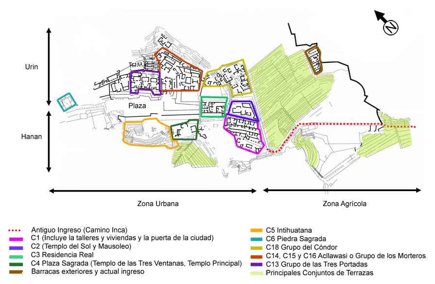

Huayna Picchu Picchu ou Machu Picchu (em quíchua Machu Picchu, "velha montanha"), também chamada "cidade perdida dos Incas", é uma cidadela Inca, da Era pré-colombiana, bem conservada, localizada no topo de uma montanha, a 2 400 metros de altitude, no vale do rio Urubamba, atual Peru. Foi construída como no início do século XV, por volta de 1420, sob as ordens de Pachacuti. O local é, provavelmente, o símbolo mais típico do Império Inca, quer devido à sua original localização e características geológicas, quer devido à sua descoberta tardia em 1911. Apenas cerca de 30% da cidade é de construção original, o restante foi reconstruído. As áreas reconstruídas são facilmente reconhecidas, pelo encaixe entre as pedras. A construção original é formada por pedras maiores, e com encaixes com pouco espaço entre as rochas.
Consta de duas grandes áreas: a agrícola formada principalmente por terraços e recintos de armazenagem de alimentos; e a urbana, na qual se destaca a zona sagrada com templos, praças e mausoléus reais. A disposição dos prédios, a excelência do trabalho e o grande número de terraços para agricultura são impressionantes, destacando a grande capacidade daquela sociedade. No meio das montanhas, os templos, casas e cemitérios estão distribuídos de maneira organizada, abrindo ruas e aproveitando o espaço com escadarias. Segundo a história inca, tudo planejado para a passagem do deus sol.
O lugar foi elevado à categoria de Patrimônio mundial da UNESCO, tendo sido alvo de preocupações devido à interação com o turismo por ser um dos pontos históricos mais visitados do Peru. A organização suíça New Open World Corporation (NOWC) em votação mundial gratuita pela internet e ligações telefônicas (mais de 100 milhões de votos pelo mundo) e com análise de arquitetos e arqueólogos classificou Machu Picchu como umas das sete maravilhas do mundo moderno. Há diversas teorias sobre a função de Machu Picchu, e a mais aceita afirma que foi um assentamento construído com o objetivo de supervisionar a economia das regiões conquistadas e com o propósito secreto de refugiar o soberano Inca e seu séquito mais próximo, no caso de ataque.
Fonte: Wikipedia
Machu Picchu se encontra a 13º 9' 47" de latitude sul e 72º 32' 44" de longitude oeste. Faz parte do distrito de mesmo nome, na província de Urubamba, no Departamento de Cusco, no Peru. A cidade importante mais próxima é Cusco, atual capital regional e antiga capital dos incas, a 130 quilômetros dali.
A 2 400 metros de altitude, Machu Picchu está situada no alto de uma montanha, cercada por outras montanhas e circundada pelo rio Urubamba, o que lhe proporciona uma atmosfera única de segurança e beleza. O santuário foi intencionalmente construído em um local onde falhas tectônicas se encontram.
As montanhas Machu Picchu e Huayna Picchu são parte de uma grande formação orográfica conhecida como Batolito de Vilcabamba, na Cordilheira Central dos Andes peruanos. Encontram-se na margem esquerda do chamado Canyon do Urubamba, conhecido antigamente como Quebrada de Picchu.[14] Ao pé dos montes e praticamente rodeando-os, corre o rio Urubamba (Vilcanota). As ruínas incas encontram-se a meio caminho entre os picos das duas montanhas, a 450 metros acima do nível do vale e a 2 438 metros acima do nível do mar. A superfície edificada tem aproximadamente 530 metros de comprimento por 200 de largura e contém 172 edifícios em sua área urbana.
